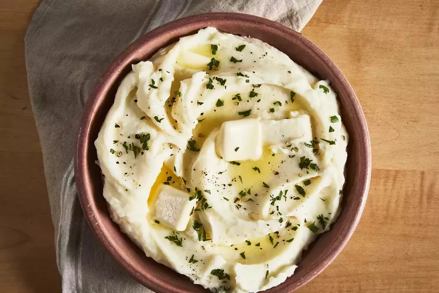

Mashed Potatoes Recipe

Description
Classic dish made from a couple simple ingredients, mainly potatoes and salt.
Ingredients
- 4 large potatoes
- 1 tsp salt
- 1 tbsp unsalted butter
Steps
- Boil potatoes until tender for 20 minutes
- Drain potatoes, and tenderize the potatoes while adding salt and unsalted butter into the mix.